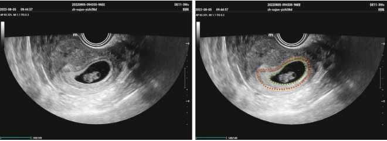
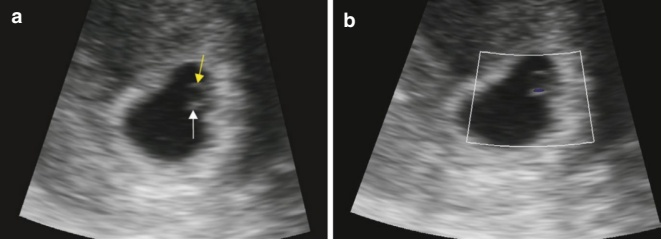
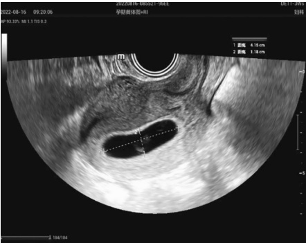
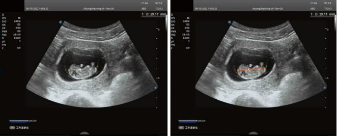

8.1 Ultrasound Evaluation of Normal Early Pregnancy
An early pregnancy refers to the period up to the end of the 12th week of gestation. Clinical manifestations of early pregnancy include the cessation of menstruation, symptoms such as nausea and vomiting, and a positive urine pregnancy test.
8.1.1 Ultrasonography
In normal cases, the gestational sac is located in the upper-middle part of the uterine cavity. It is surrounded by a complete, uniformly thick, hyperechoic ring measuring no less than 2 mm in thickness. This hyperechoic ring represents the decidua.
The “intradecidua sign” refers to an intrauterine round or oval fluid collection lying within the echogenic decidua. As the gestational sac enlarges, the


characteristic “double-sac sign” becomes apparent, showing an intra-endometrial fluid collection surrounded by two concentric echogenic rings [1] (see Fig. 8.1).
The yolk sac is the first anatomical structure detectable by ultrasound within the gestational sac. The yolk sac is typically visualized on transvaginal ultrasound around the 5th week of gestation. On transabdominal ultrasound, it is generally visualized later than on transvaginal ultrasound.
In a normal pregnancy, the yolk sac appears as a spherical structure with a thin, thread-like wall and an anechoic center (see Fig. 8.2). Its diameter ranges from 3 to 8 mm, with an average of 5 mm. It usually disappears by the 12th week of gestation [2].
By 6 weeks of gestation, transvaginal ultrasound reveals an embryo measuring 2–3 mm in length, typically located adjacent to the yolk sac [3]. Between 6 and 6.5 weeks, fetal heartbeats can be detected using transvaginal ultrasound. Fetal skull osteogenesis begins at 8 weeks of gestation, with ossification becoming visible by the end of the 11th week [4]. By 10 weeks, the fetus begins to move its limbs.
8.1.2 Standardized Measurements in Early Pregnancy
The internal diameter of the gestational sac (excluding the hyperechoic ring) is measured in the largest longitudinal and transverse sections of the gestational sac, not the uterus. The average internal diameter is calculated as the sum of the maximum anterior-posterior, left-right, and top-bottom diameters, divided by three.
The crown-rump length (CRL) should be measured in the maximum longitudinal section of the embryo or in the fetal median sagittal plane. This measurement must be taken when the fetus is in a natural straight position, avoiding hyperextension or hyperflexion.
8.1.3 Weeks of Pregnancy (Gestational Age)
- Estimation of gestational age in normal early pregnancy
Blood HCG can be tested to confirm pregnancy from the 30th day of pregnancy. The gestational sac is typically identifiable on transvaginal ultrasound at approximately 5 weeks of gestation, and the embryo becomes visible on transvaginal ultrasound around 6 weeks of gestation [5].
Before 7 weeks of gestation, particularly when the embryonic structure is not yet visible, the average internal diameter of the gestational sac is commonly used to estimate gestational age. The formula for calculating the average internal diameter is: Average internal diameter (mm) = (maximal longitudinal diameter + transverse diameter + anterior-posterior diameter)/3. The gestational age (in days) can then be estimated using the formula: Gestational age (days) = average internal diameter (mm) + 30 (see Fig. 8.3).
Once the embryo or fetus is visible, measuring the CRL is the most accurate method for estimating gestational age during the first trimester [4]. While vari-


ous CRL equations have been proposed since 1975, there is no consensus on the most appropriate formula for pregnancy dating [6]. Alternatively, a standardized table of CRL in relation to gestational age can be used to determine the corresponding gestational week (see Fig. 8.4).
- Estimation of gestational age in early pregnancy for patients conceived with ART
(1) Patients conceived via intrauterine insemination (IUI)
(1) Patients conceived via intrauterine insemination (IUI)
For patients conceived through intrauterine insemination (IUI), the date of ovulation is used to calculate the last menstrual period (LMP).
Patients with regular menstrual cycles: Gestational age can be calculated using the actual LMP.
Patients with polycystic ovary syndrome (PCOS) undergoing ovulation induction: These patients often experience variability in the length of the follicular phase, with the ovulation induction phase lasting a month or longer. In such cases, calculating gestational age based on the actual LMP can lead to overestimation. Instead, the date of ovulation should be used to determine the LMP, which is typically 14–15 days before ovulation.
(2) Patients undergoing in vitro fertilization and embryo transfer (IVF-ET)
For IVF-ET patients, menstrual cycles are often manipulated with artificial interventions, such as adjustments to the follicular phase or endometrial proliferation phase. Consequently, gestational age is calculated based on the date of embryo implantation, not the patient's actual LMP.
Cleavage-stage embryo implantation: The LMP is estimated as 17 days before the date of implantation.
Blastocyst implantation: The LMP is estimated as 19 days before the date of implantation.
Follow-up timeline for IVF-ET patients:
- Day 14 after implantation: A pregnancy test is performed (equivalent to 31 days of gestation for cleavage-stage embryos and 33 days for blastocysts).
Day 20 after implantation: Ultrasound is performed to detect the presence of a gestational sac in the uterus (equivalent to 37 days for cleavage-stage embryos and 39 days for blastocysts).
Days 30–35 after implantation: Ultrasound is conducted to detect fetal heartbeats (equivalent to 47–52 days for cleavage-stage embryos and 49–54 days for blastocysts).
8.1.4 Differential Diagnosis
An intrauterine gestational sac must be differentiated from intrauterine fluid accumulation.
Intrauterine fluid accumulation: Unlike a gestational sac, intrauterine fluid does not exhibit the double-ring sign nor contain an embryonic bud or yolk sac. On ultrasound, intrauterine fluid may appear with a few punctate echoes, accompanied by strong peripheral echoes from detached endometrial fragments.
In cases where intrauterine fluid accumulation is observed without a gestational sac, the possibility of ectopic pregnancy should be carefully considered. A thorough examination of both adnexa is essential to rule out this condition.